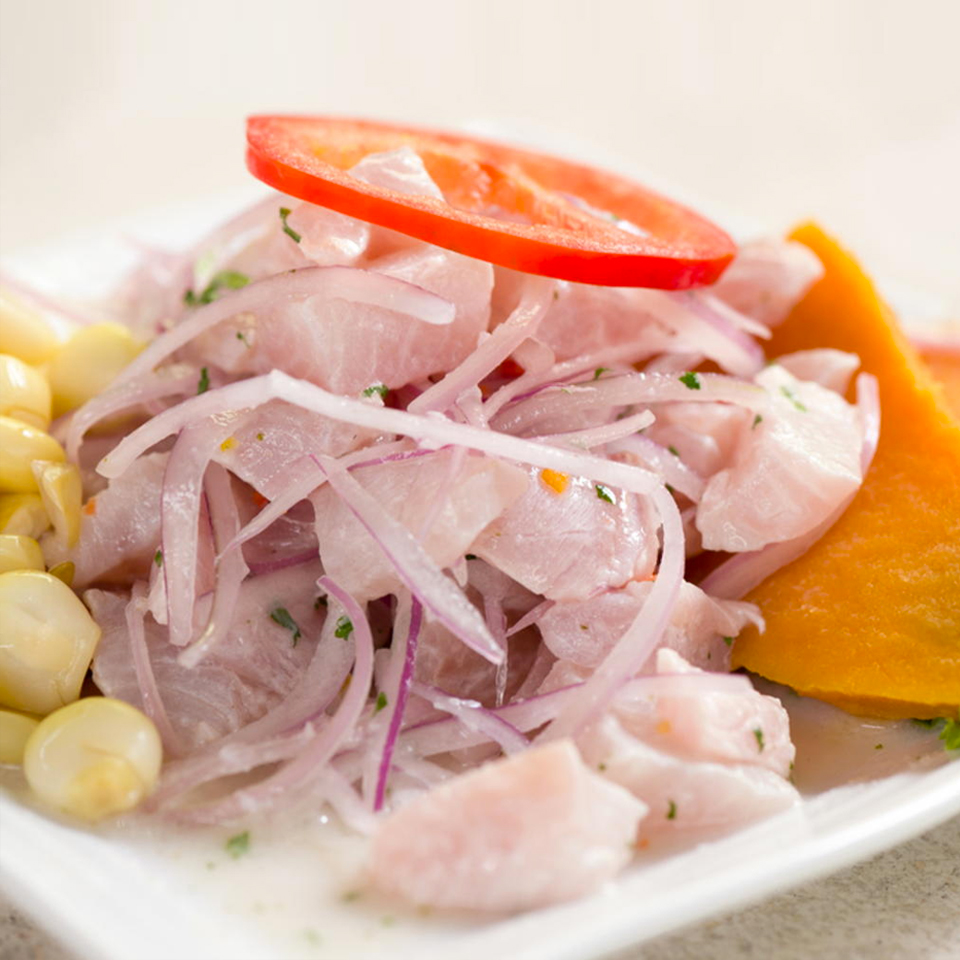

El Ceviche en Perú es considerado como parte de la identidad nacional.
Machu Picchu
345
Un caballito de totora es un tipo de embarcación construida desde mil a tres mil años a. C. con tallos y hojas de totora. Está diseñado para transportar a un navegante con sus aparejos, durante las faenas de pesca marina en el Perú
Tarapoto es una ciudad peruana de la región de San Martín, que se caracteriza por el bosque nuboso amazónico y sus abundantes palmeras.
Machu Picchu fue declarado Santuario Histórico Peruano en 1981 y está en la Lista del Patrimonio de la Humanidad de la Unesco desde 1983.
Sacsayhuamán es una "fortaleza ceremonial" inca ubicada dos kilómetros al norte de la ciudad de Cusco. Se comenzó a construir durante el gobierno de Pachacútec, en el siglo XV. Sin embargo, fue Huayna Cápac quien la culminó en el siglo XVI.
Las Líneas de Nazca son un grupo de geoglifos precolombinos que abarcan un área de casi 1,000 km cuadrados y hay alrededor de 300 figuras distintas, que incluyen animales y plantas.
Las llamas son los habitantes por excelencia de los andes, y esto se debe a que su sangre posee una gran cantidad de hemoglobina.
Es conocida por sus densos bosques nubosos, la escarpada cordillera de los Andes y unas ruinas antiguas. El sitio arqueológico más destacado es Kuélap, un asentamiento preincaico que tiene cientos de construcciones y una gran muralla perimetral. Hacia el sur se encuentra Chachapoyas, la capital de la región, la que presenta techos de tejas rojas.
Un majestuoso felino que pertenece a la subfamilia de los panterinos. Un animal robusto, de manchas negras en su anaranjado cuerpo. La agudeza de sus sentidos y su habilidad para correr lo han convertido en el Rey del Manu.